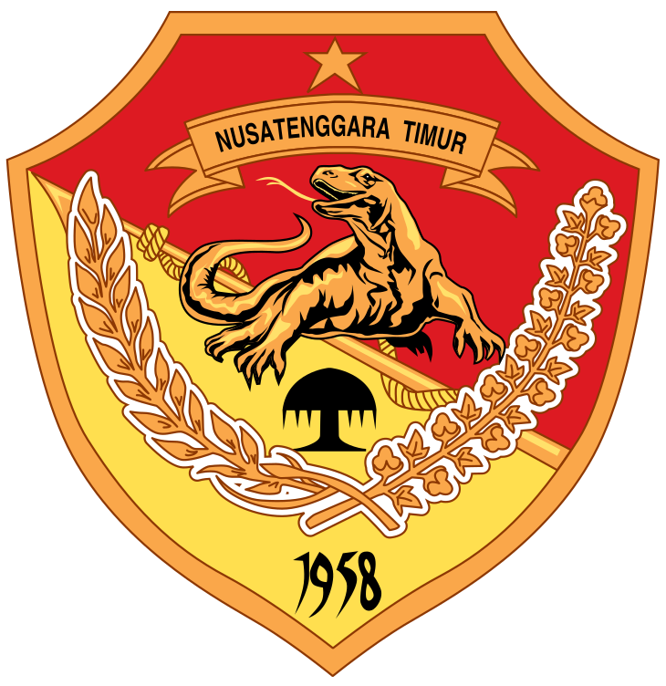

| Kabupaten/Kota |
Ibu Kota |
Bupati/Wali Kota |
Luas Wilayah |
Jumlah Penduduk |
Jumlah Kecamatan |
Kelurahan/Desa |
Lambang  |
| Kab. Alor |
Kalabahi |
Amon Djobo |
2.864,60 |
211.872 |
17 |
17/158 |
 |
| Kab. Belu |
Atambua |
Agustinus Taolin |
1.284,97 |
217.973 |
12 |
12/69 |
 |
| Kab. Ende |
Ende |
Djafar H. Achmad |
2.046,50 |
270.763 |
21 |
23/255 |
 |
| Kab. Flores Timur |
Larantuka |
Doris Alexander Rihi |
1.813,20 |
276.896 |
19 |
21/229 |
 |
| Kab. Kupang |
Oelamasi |
Korinus Masneno |
5.434,76 |
366.383 |
24 |
17/160 |
 |
| Kab. Lembata |
Lewoleba |
Matheos Tan |
1.266,00 |
135.930 |
9 |
7/144 |
 |
| Kab. Malaka |
Betun |
Simon Nahak |
1.160,63 |
183.898 |
12 |
-/127 |
 |
| Kab. Manggarai |
Ruteng |
Herybertus Geradus Laju Nabit |
2.096,44 |
312.855 |
12 |
26/145 |
 |
| Kab. Manggarai Barat |
Labuan Bajo |
Edistasius Endi |
2.397,03 |
256.317 |
12 |
5/164 |
 |
| Kab. Manggarai Timur |
Borong |
Agas Andreas |
2.642,93 |
275.603 |
9 |
17/159 |
 |
| Kab. Nagekeo |
Mbay |
Johanes Don Bosco Do |
1.416,96 |
159.732 |
7 |
16/97 |
 |
| Kab. Ngada |
Bajawa |
Andreas Paru |
1.645,88 |
165.254 |
12 |
16/135 |
 |
| Kab. Rote ndao |
Baa |
Paulina Haning-Bullu |
1.280,00 |
143.764 |
10 |
7/112 |
 |
| Kab. Sabu Raijua |
Menia |
Nikodemus Nithanel Rihi Heke |
460,54 |
89.327 |
6 |
5/58 |
 |
| Kab. Sikka |
Maumere |
Fransiskus Roberto Diogo |
1.731,90 |
321.953 |
21 |
13/147 |
 |
| Kab. Sumba Barat |
Kota Waikabubak |
Johanes Dade |
737,42 |
145.097 |
6 |
11/63 |
 |
| Kab. Sumba Barat Daya |
Kota Tambolaka |
Markus Dairo Talu |
1.480,46 |
303.650 |
11 |
2/173 |
 |
| Kab. Sumba Tengah |
Waibakul |
Paulus Limu |
1.868,74 |
85.482 |
5 |
-/65 |
 |
| Kab. Sumba Timur |
Kota Waingapu |
Khristofel Praing |
7.000,50 |
244.820 |
22 |
16/140 |
 |
| Kab. Timor Tengah Selatan |
Kota Soe |
Egusem Pieter Tahun |
3.947,00 |
455.410 |
32 |
12/266 |
 |
| Kab. Timor Tengah Utara |
Kota Kefamenanu |
Juandi David |
2.669,70 |
259.829 |
24 |
33/160 |
 |
| Kota Kupang |
- |
George Melkianus Hadjoh |
180,27 |
442.758 |
6 |
51/- |
 |